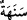

İşte Allah bundan sonra (aynı şekilde) âhiret hayatını da yaratacaktır. Gerçekten
Allah her şeye kadirdir.
21. O, dilediğine azâb eder, dilediğini esirger. Ancak O’na döndürüleceksiniz.
22. Siz ne yeryüzünde ne de gökte (Allah’ı) âciz bırakamazsınız. Allah’tan başka
bir dost ve yardımcı da bulamazsınız.
Ey Muhammed! “Andolsun ki biz” seni göndermemizden önce tevhîde ve hak yola
dâvet etmesi için “Nûh’u kendi kavmine gönderdik de...”
Nuh (a.s.)’ın ismini, Süheylî, Kitâbü’t-ta‘rîf’te “Abdulgaffâr”; Ebu’l-Leys,
Bostan’da “eş-Şâkir” olarak zikretmiştir. “Nuh” diye isimlendirilmesinin sebebi, Allah
korkusundan çok âh u vâh edip ağlaması sebebiyledir. Çünkü o, Âdem (a.s.)’ın
yeryüzüne indirilmesinden 1642 sene sonra doğmuş ve 40 yaşında peygamber olarak
gönderilmiştir.
Nuh (a.s.)’ın kavmi o asırdaki bütün dünya halkıdır. Bizim Peygamberimiz (s.a.)’in
peygamberliğinin umûmî ve genel oluşu ile Nuh (a.s.)’ın peygamberliğinin umûmî oluşu
arasındaki fark şudur: Bizim Peygamberimiz kendi zamanındaki insanlara ve
kendisinden sonra kıyâmete kadar gelecek bütün insanlara peygamber olarak
gönderilmiştir. Nuh (a.s.) ise sadece kendi zamanındaki bütün insanlara peygamber
olarak gönderilmiştir; risaleti sonraki asırları kapsamamaktadır. Nitekim İnsanü’l-
uyûn’da bu şekilde kaydedilmiştir.
Nuh (a.s.) puta tapan insanlara gönderilen ilk peygamberdir. Çünkü ilk defa puta
tapıcılık onun kavminde ortaya çıkmıştır. Allah Teâlâ da onları bu küfür ve şirk
hâlinden nehyetmek için Nuh (a.s.)’ı göndermiştir. Ve yine o, uzak ve yakın bütün
akrabalara gönderilen ilk peygamberdir. Âdem (a.s.) ise, Allah’ın, kendi evlâdlarına
îmanı ve şeriatı ta’lim etmesi için gönderdiği ilk Rasûlü’dür. Nuh (a.s.) küçük
babamızdır. Fethu’r-Rahman’da kaydedildiğine göre kabri, Şam diyarında ve Kerk
denilen yerdedir.
Nuh (a.s.), peygamber olarak gönderildikten sonra “o bin yıldan elli yıl eksik bir süre
onların arasında kaldı.”
“Bir yerde kalmak”, “ikamet etmek” demektir. “Elf” mâlum olan “bin” sayısının
ismidir. Bu şekilde adlandırılmasının sebebi; ondaki sayılar, birbirlerine uyumlu sayı
gruplarından oluşur. Çünkü sayılar dört kısımdır: Birler, onlar, yüzler, binler. Bine
ulaşınca hepsi kaynaşmış ve tamamlanmış olur. Sonrası tekrardan ibârettir.
Bâzıları demiştir ki: Bin rakamı da bundandır; yâni Nuh (a.s.)’ın bekleme
süresindendir. Çünkü o, nazmın başıdır. “Sene” kelimesinin aslı “dir. Bu, Arapların
“ (Falan ile seneden seneye muâmele yaptım)” sözünden alınmıştır. Yine
denilmiştir ki bu kelimenin aslı vavlıdır. Çünkü Araplar onu “ (seneler)” şeklinde
çoğul yaparlar. Sonundaki “hâ” ise vakıf içindir. “Âmm (yıl)”, sene demektir. Ancak
çoğu defa “sene” kelimesi; şiddet ve kuraklık yılları için kullanılmıştır. Hatta kuraklığa